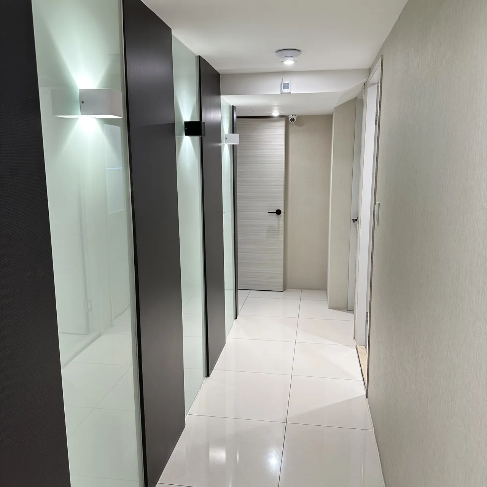
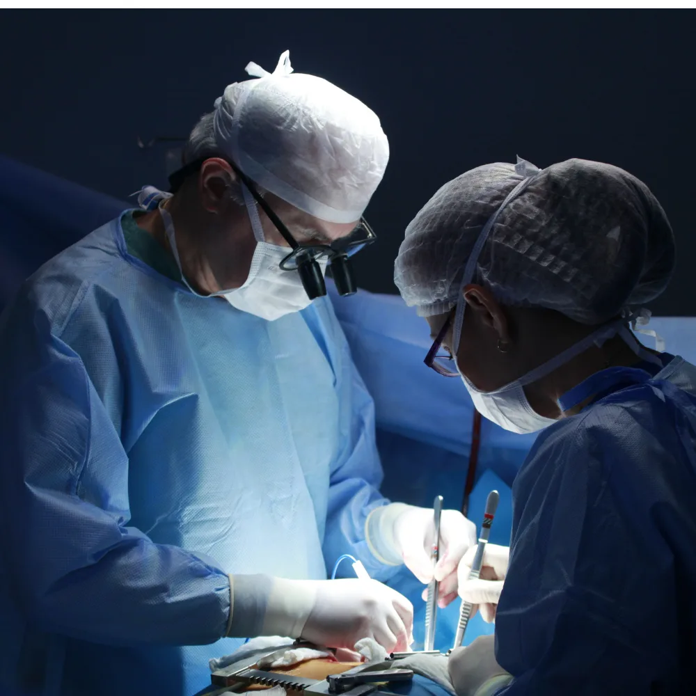

TWO-SURGEON APPROACH
雙主治手術制度
外科手術通常會有主刀醫師和助手醫師，才能讓手術順利進行，坊間許多診所在執行割包皮手術時，往往僅由一位主治醫師偕同護理人員開刀。在津久診所，雙主治醫師手術是我們的一大特色！透過兩位主治醫師的通力合作，才能讓患者享受到更全面的治療服務。
我們相信，包皮手術不僅僅只是為解決患者問題，作為外科醫師，手術本身更應是一場精雕細琢的藝術創作，所以每一次的手術，我們都會以日本職人精神的最高標準來進行，力求患者在功能與美觀上都能達到理想結果。
除此之外，我們會在術前花大量時間與患者溝通與詳細評估，透過術前溝通，幫助患者了解手術過程、術後照護與可能的風險，提高患者對治療的信心。
這是津久診所x泌密會客室獨有的「雙主治手術制度」。
選擇一次手術，同時兩位醫師幫您執刀的「雙主治包皮槍5.0」，才能替您做出您最滿意的 GG！
DUAL ENTRANCES FOR PRIVACY
保證隱私！雙入口通道

津久診所考量到泌尿科的求診者往往對隱私格外重視，因此特別設計了雙入口，分別為「一般入口」與「VIP專屬通道」，為求診者提供不受干擾的隱密空間，讓每位患者在就診時感到放心自在，更能坦率地與醫師討論任何困擾。
ANONYMOUS STI SCREENING
100%絕對匿名篩檢
不管是否有症狀，但你擔心自己可能暴露在性病的風險當中了嗎？
津久診所提供 100% 絕對匿名篩檢，只要透過我們的官方 line 預約匿名篩檢，不用留下真實姓名、不用與醫師看診，甚至不用說明來意，直接到診所並向櫃台人員出示指定圖片即可進行匿名篩檢。篩檢完畢後透過我們的官方 line 即可看報告，若有需要再回診即可。
百分百做到匿名，隱私，安心，保密。
SAME-DAY CONSULTATION & SURGERY
提供「快速通關」服務，讓您當日看診完畢即刻手術

無論您是要割包皮、男性結紮、菜花去除、珍珠丘疹去除等，我們皆能提供準確又高品質的當日看診．當日手術之「快速通關」服務。
各式微創手術都能在看診當日完成，免住院、免等待，快速有效滿足您的需求！
ONE-STOP UROLOGY & COLORECTAL CARE
兩性下半身「一站式」診療
不只泌尿專科，津久診所更有肛門直腸外科門診。
我們特聘前北醫附醫大腸直腸外科主治醫師陳嘉哲醫師駐診，他的專長為內外痔瘡、廔管、肛裂等各種肛門疾病與性病診斷與治療。
結合津久診所堅強的醫學中心級泌尿專科醫療團隊，真正達成一站式下半身診療看診體驗。
「用輕鬆的口吻讓大家解開性愛面紗，用精湛的技術來捍衛大家的泌密健康」
更讓所有人能更輕鬆面對人生挑戰，同時創造精彩人生！
我們持續不斷追求的目標是：